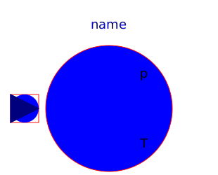
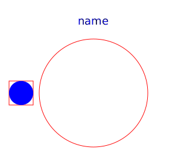
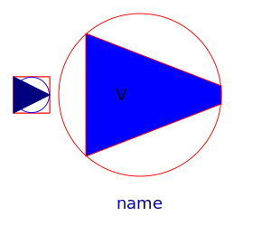
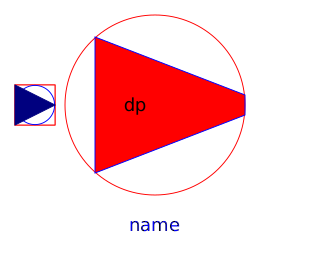
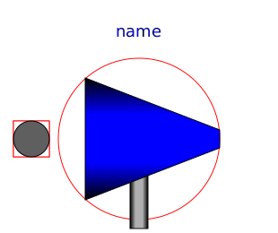

Thermodynamic equations are defined in partial models (package Interfaces.Partials). All fans / pumps are considered without losses, they do not change enthalpy flow.
| Name | Description |
|---|---|
|  Ambient | Ambient with constant properties |
|  AbsolutePressure | Defines absolute pressure level |
|  VolumeFlow | Enforces constant volume flow |
|  PressureIncrease | Enforces constant pressure increase |
|  IdealPump | Model of an ideal pump |